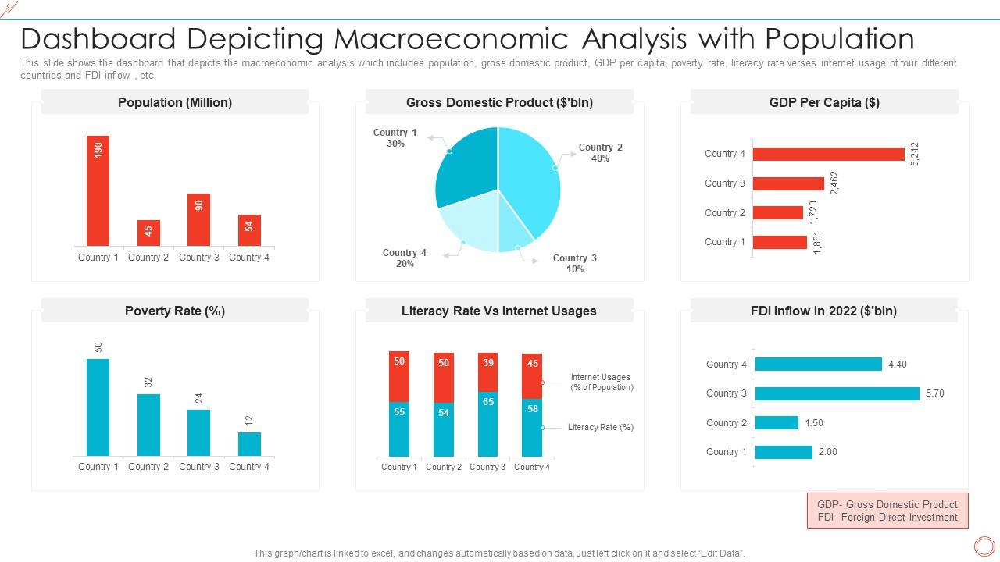

An interactive Power BI dashboard analyzing 57 years of global economic data. This project examined GDP growth and population trends across regions, revealing strong correlations between economic indicators and social development.

⚙️Technologies Used
Power BI
DAX
SQL Server
Excel
Data Modeling
ETL Processing
Economic Analytics
🎯Key Outcomes
- Identified strong GDP-literacy correlations, confirming education as a key driver of economic development.
- Revealed Oceania's high population growth and Western Europe's population density.
- Created a dynamic dashboard for exploring complex economic relationships.
- Provided a visual tool for data-driven policy and investment decisions.